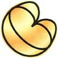

Flotta Stellare - Classe Antares |
| USS Antares Comandata dal Capitano Thomas Ramart, distrutta da Charlie Evans. | Charlie X | Antares è la stella più splendente dello Scorpione, così chiamata per il suo colore rosso fuoco (Anti-Ares, antagonista di Marte). |
| USS Hermes NCC-10376 Ha fatto parte del gruppo di navi che hanno bloccato i sostegni romulani alla famiglia di Duras durante la guerra civile klingon. | Redemption - Part II | Hermes (Mercurio) è il dio greco-romano messaggero degli dèi. Una delle prime portaerei inglesi (un incrociatore modificato) si chiamava Hermes. |